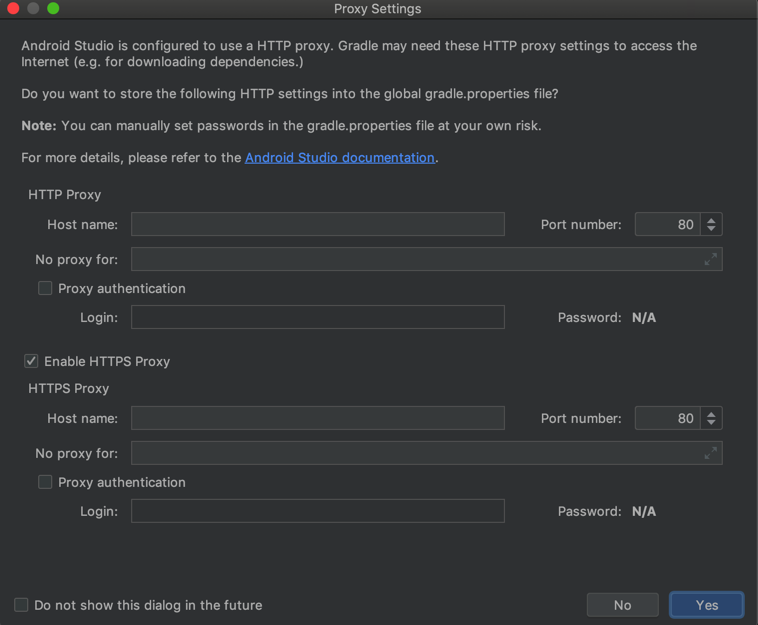

gradle
android studio中给gradle加代理
升级了Android Studio，弹框问是否要设置Gradle的代理：

其中的：
- HTTP
- host
- No proxy for
- Proxy authentication
- Login
- Password
- HTTPS
- host
- No proxy for
- Proxy authentication
- Login
- Password
等内容，其实就是对应着：
中提到的：
- Configuring an HTTP proxy using gradle.properties
systemProp.http.proxyHost=www.somehost.org systemProp.http.proxyPort=8080 systemProp.http.proxyUser=userid systemProp.http.proxyPassword=password systemProp.http.nonProxyHosts=*.nonproxyrepos.com|localhost
和：
- Configuring an HTTPS proxy using gradle.properties
systemProp.https.proxyHost=www.somehost.org systemProp.https.proxyPort=8080 systemProp.https.proxyUser=userid systemProp.https.proxyPassword=password systemProp.https.nonProxyHosts=*.nonproxyrepos.com|localhost
的
系统属性systemProp中的http和https的
- proxyHost
- proxyPort
如果要登录认证，再需要：
- proxyUser
- proxyPassword
以及有哪些特殊的url需要被排除掉，可以加到：
- nonProxyHosts
而此处，想要全局的gradle都用上代理，可以去把这部分代理配置，加到：
- gradle的全局配置文件
- 当前用户下面的
gradle.properties中- Linux系（Linux/Mac等）
$HOME/.gradle/gradle.properties
- Win系
%userprofile%\.gradle\gradle.properties
- Linux系（Linux/Mac等）
- 当前用户下面的
在其中加上对应配置，比如：
systemProp.http.proxyHost=127.0.0.1
systemProp.http.proxyPort=58591
systemProp.https.proxyHost=127.0.0.1
systemProp.https.proxyPort=58591
注：
其中此处的proxyHost和proxyPort，是我此处
Trojan的代理配置。（可以在
Trojan-QT5的界面中看到，或从菜单复制终端代理命令中拷贝出来）